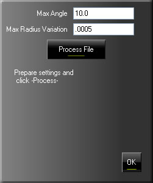
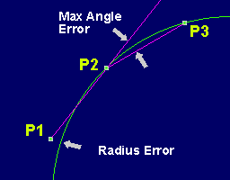
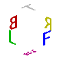
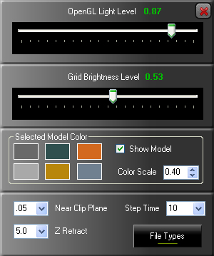
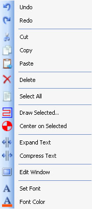

|
CodeChop:
The CNC Programmers Helper! |
Make CNC programming Fun!
Fast.. Simple.. Easy..
Rocket Fast Path Selection.
STL Solid Import.
Full Un-Dockable Text Editor and MUCH MORE! |
Install on ALL your machines for Free!
To download, go HERE!
Please visit the Support Forums if you have questions.
Click to enlarge an Image.
System Requirements:
Pentium 4
Windows XP, Vista Or Seven
OpenGL 1.5 or above Video Card
1024x768 Minimum resolution
1Gig Sys Ram.
Ideal system:
Quad Core w/ 4gig Ram
Pci-E Video Card with 512M ram. Such as NVidia's 8800GT or 8800GTS cards
|
Getting around in the Plot Window:
To change your view.. there are a few options.
You can press the 'left mouse button' and spin the view about the Z axis and
tilt the rotation.
To Zoom, use the right mouse button.
To move the look at center on XY, press the shift key and left mouse button.
To move the look at center in the Z plane, Use Ctrl key and left mouse button.
Notice that a 'Cross hair' will show where you are looking.
There is a button on the toolbar to lock this on.
If you have the 'Auto Center on Selection' button locked, your look at center will be snapped to the END point of a line or arc move.
You can also use the Nav Ball and center click on one of the letters to force the view from that direction.
Some Basic Information on
the Buttons:
File/Editor Related:
From the Left End:
Point Filter - This opens the opens the Filtering Panel.
New File - Clears the Editor and removes the STL from memory (If one is loaded)
Open File - Better save first if you need to. CodeChop wont Ask you!
Save - Use to save current changes. If you have filtered CNC code. It will save the new file with CVRT_ added to the start.
Save As - In case you want to save the current file as a different name.
Copy - This and the other edit buttons do just what the say.
Paste - Pastes ANY text that's in the clipboard.
Delete - Deletes selected text.
Cut - Deletes and moves selected text to the Clipboard.
Undo - Undo changes in text.
Redo - Redo changes in test.
Find - Find Text. (F3)
Find Next (F3)
Find and Replace (F4)
Remove Line Numbers - Strips all line numbers off all blocks of CNC code.
Re-Number/Insert Line Numbers - Does NOT renumber Comment Blocks or Blocks that start with the letter 'O'
Plot Related:
These are Lockable Buttons and turn On/Off the following.
From the Left:
Plot Window
Vertical/Horizontal Window Layout
Grid
Rapid Moves
Z Only Moves
Z-Buffer
Snap to Selection
Eye Look At Center
Selected Path
Zoom Window
Free Spin
Com Console
Tool Path and Model Related:
From the Left:
Rewind
Step Backwards. - Hold down to auto repeat. Right click to 'Lock' auto repeat on.
ReDraw/Update Plot Window
Step Forward. - Hold down to auto repeat. Right click to 'Lock' auto repeat on.
Lighting, STL Settings and other display/tool path related settings.
Load STL Model
This could also be called "Line to Arc Filtering". What this tries to do is convert single points/lines that approximate an Arc and turn it in to an Arc Move.
This is a working converter but has limitations. The Results are very dependent on the resolution that the original CNC code was produced at. Very small arcs in your CNC code will require extreme tolerances.
I recommend a very tight setting of .0002 when you generate your tool path on small arcs (Under .125). You may even have to go tighter than this. The down side is, it will take longer for your CAM package to generate the tool path but you will get much better results when you arc filter the path.
The Filter Tool:
 |
This is what the tool looks like.
The MAX Angle error is shown between P1-P2 and P2-P3

The Max Radius Variation is the fit of the Arc.
On LARGE ARCS, you may need to be generous with this value. |
Once you set these values and press Process File, A window will open so you can select the CNC file to process.
Once the processing is complete, this same tool will show the total lines at the start, the total lines removed, the new line count and the percent of file reduction.
Also, CVRT_ will be attached to the front of the file name. Your original file is unchanged.
Reduction is good but bad code is just BAD.
You will need to 'Play' with these values and carefully inspect the results of the process.
Some types of tool path does not always produce good results. Intersections between TWO ARCS is something you will need to be
VERY AWARE OF AND CAREFUL WITH! Close angles between two arcs can fool my algorithm and cause over/under shooting.
Once the file has been converted, the editor will load the new CNC code and the plot window will update to the newly generated path.
 |
This will show you the direction you are looking at.
Top, Bot, Left, Right, Front, Back.
If you 'mouse over' the Nav Ball, the ball will disappear. if you mouse over one of the letters and press the center mouse button, your view in the plot window will change to that view angle. |

|
This controls the light level in the plot window, the brightness of the grid and lets you select from 6 different base colors for the STL Solid Model.
The Color Scale will change the overall brightness of the model. Using the 6 colors and the color scale, you can produce most metal and plastic looking colors.
The 'Show Model' Check box' does just that. Its default is checked.
Near Clip controls the clip plane from the camera position. A small value is useful for viewing very small details.
Step Time is the delay in milliseconds before the auto repeat path
draw function fires again.
Z Retract is the level at which all paths retract for tool change. If your machine is 20" from the table.. this is a good value but.. on small parts, it looks odd so 5" may be a better choice.
The File Types button will open the 'File_Filter.txt' file so you can change what files
are filtered in the Open, Save, Save As... and in the Com Panel, Save and Send Dialog
Boxes. |
 |
To get to this menu, Right Click anywhere in the text editor window.
It contains some of the same functions as the tool bar Icons along with some special functions.
There is the Expand and Compress text. Basically it inserts or removes spaces between the G code so that..
X1.0Y2.0Z3.0 Becomes X1.0 Y2.0 Z3.0
This makes things easier on the eyes.
The Edit Window function:
This will UnDock the edit window so you can place it where ever you want. Even make it full screen on a 2nd Monitor! You can use F5 to dock and undock the window.
Font changes the font and size and Font Color changes the Font's fore color.
|
How this all works: |
The reason a video card with lots of memory is important is, the CNC tool path is converted
from text G-Code data in to something that the Video Card can display. Once this is done,
the OpenGL code is loaded in to the video card. Because the data is loaded in to the video
card, the more memory, the bigger the CNC program can be with out slowing the display. If
the video card runs out of memory, then part of the OpenGL data will be stored in system ram.
This can really slow things down. I use this at work daily with an old nVidia 440MX with only
64M of memory. It runs flawless until I open other apps that also use video ram such as my
CAM package. See the problem now? The two applications are fighting over Video Ram!
The conversion from CNC to OpenGL is as fast as I can make it and still keep info embedded
that you will need. When you select tool path in the plot window, the type of move will be
displayed on the bottom of the screen. Linear, Canned, Length Offset and so on.
When you open a file, it is converted to OpenGL for displaying.
If you edit the file, you will need to UPDATE the display by clicking the Update button at the
bottom of the plot window. It looks like the standard 'Play' button on Audio Systems.
The selection is done using a method called 'Color Selection'.. Its easy to understand and.. IS
the fastest method there is to select from tens of thousands of items. Basically, I draw the
screen in the back buffer. Each item is only one color value higher then the next. None of this
you see because the back buffer during selection is never push to the front buffer(the screen).
What ever color I get back is a direct pointer to that position in the item list. From that list,
I get the line that generated that bit of tool path. From there its just a matter of highlighting
the text in the editor. Simple huh? Well.. Coding it wasn't all that and a bag of chips. On
my P4 at work with a 5meg CNC program loaded, It will select the path I'm after as soon as
I lift my finger off the middle mouse button. It is 'Rock Fast Selection!'
|
|